7.3.1.2. Explanation of 符号 
Symbol | 说明 |
|---|---|
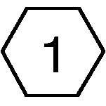 (图 1) 9050 | 此 symbol 用于 请参阅 说明 通常 described 在...上 相同 page. |
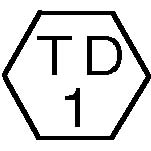 (图 2) 9051 | 此 symbol 用于 请参阅 测试 数据 通常 在...上 相同 page 用于 参考 in case the 电压 值 shown 在...上 BSD id 不同 从 the 测量值. |
PL 7.7 | 此 symbol 用于 请参阅 the Parts 列表. PL stands 用于 Parts 列表 和 7.7 denotes 板 编号 此 显示 the appropriate 零件/部分 is shown 在...上 已指示 板. 此 symbol is added to 所有 the replaceable parts 在...上 BSD. |
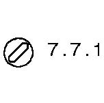 (图 3) 9053 | 此 symbol 用于 请参阅 the adjustments in the 维修 和 调整 chapters. The 号码 7.7.1 显示 the 调整 步骤 发现 as ADJ 7.7.1 in the 调整 章节. |
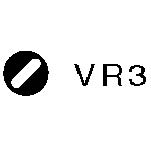 (图 4) 9054 | 此 symbol identifies a variable 电阻 adjustable in the field. |
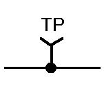 (图 5) 9061 | 此 symbol identifies a 测试 point of a 信号. |
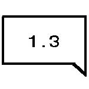 (图 6) 9055 | 此 symbol 用于 show 在哪里 输入 进入 the functions 来自. 此 示例 显示 输入 来自 the 分组 Functions in Chain 1-3. |
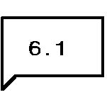 (图 7) 9056 | 此 symbol 用于 show 在哪里 输出 从 the functions go. 此 示例 显示 输出 进入 the 分组 Functions in Chain 6-1. |
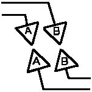 (图 8) 9041 | 此 symbol 显示 信号 线条 是 connected vertically. |
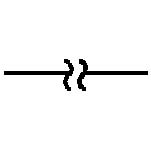 (图 9) 9042 | 此 symbol 显示 信号 线条 是 connected horizontally. |
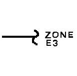 (图 10) 9043 | 此 symbol 显示 a 信号 line 连接到 a specific 位置 in the 相同 功能. 此 示例 显示 the destination the 信号 line 进入 is marked in Zone (E-3). |
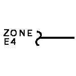 (图 11) 9044 | 此 symbol 显示 a 信号 line 连接到 a specific 位置 in the 相同 功能. 此 示例 显示 the 位置 the 信号 line 启动 从 is marked in Zone (E-4). |
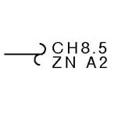 (图 12) 9045 | 此 symbol 显示 a 信号 line 连接到 a specific 位置 in 另一个 纸张 (shown at 下方 右侧 的 BSD). 此 示例 显示 the destination the 信号 line 进入 is marked in Zone (A-2) in CH8.5. |
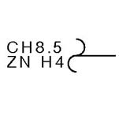 (图 13) 9046 | 此 symbol 显示 a 信号 line 连接到 a specific 位置 in 另一个 纸张 (shown at 下方 右侧 的 BSD). 此 示例 显示 the 位置 the 信号 line 启动 从 is marked in Zone (H-4) in CH8.5. |
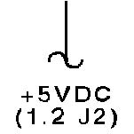 (图 14) 9047 | 此 symbol 显示 电源 输出 line in Chain 1. |
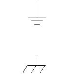 (图 15) 9025 | 此 symbol 显示 框架 接地. |
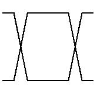 (图 16) 9062 | 此 symbol 表示 a twisted pair of wires. |
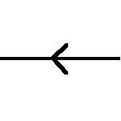 (图 17) 9048 | 此 symbol 显示 a 信号 runs 从 右侧 to 左侧 in the opposite 方向 的 usual one. |
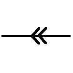 (图 18) 9049 | 此 表示 a feedback 信号. |
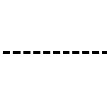 (图 19) 9037 | 此 symbol 显示 a 机械 linkage to a 零件/部分. |
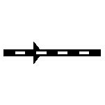 (图 20) 9038 | 此 symbol 表示 a 机械 drive 信号 和 显示 the 方向 in 哪个 the 信号 runs. |
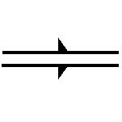 (图 21) 9039 | 此 symbol 表示 a document or 纸张 和 显示 the 方向 in 哪个 it runs. |
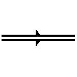 (图 22) 9040 | 此 symbol 表示 a heat, 灯/光线 or air 信号 和 显示 the 方向 in 哪个 it runs. |
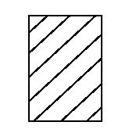 (图 23) 9063 | 此 symbol 显示 控制 Logic. |
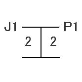 (图 24) 9064 | 此 symbol 显示 a 双面/双 插头 连接器. |
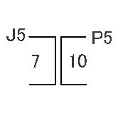 (图 25) 9065 | 此 symbol 显示 a drawer 插头 连接器. |
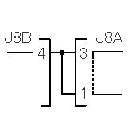 (图 26) 9066 | 此 symbol 显示 a shorting 插头 连接器. |
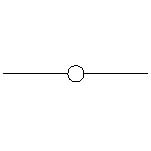 (图 27) 9028 | 此 symbol 显示 the fasten 用于 连接. |
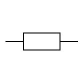 (图 28) 9067 | 此 symbol 显示 该 an electrically conductive material 这样的 as a leaf 弹簧 和 a 板 用于 连接. |
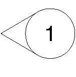 (图 29) 4001 | 此 symbol 显示 the 零件/部分 the arrow points to 已 modified by 1V. |
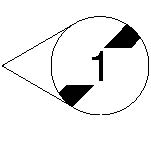 (图 30) 4002 | 此 symbol 显示 the 零件/部分 the arrow points to 尚未 been modified by 1V. It 仍然 具有 the 上一个 配置. |
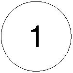 (图 31) 5005 | 此 symbol 显示 the whole 图 or the framed 示意图 is modified by 1V. |
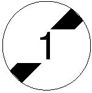 (图 32) 5006 | 此 symbol 显示 the whole 图 or the framed 示意图 尚未 been modified by 1V. The area 仍然 具有 the 上一个 配置. |
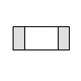 (图 33) 9077 | 此 symbol 指示 a chip 保险丝. |